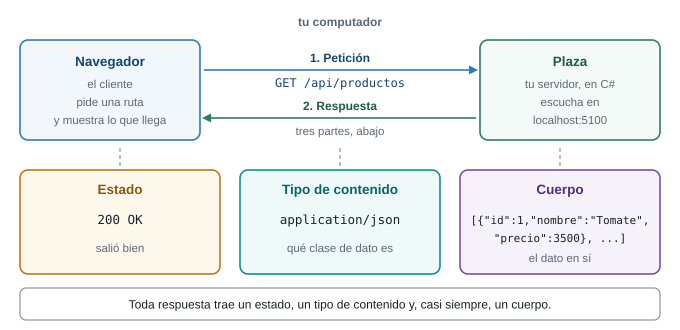
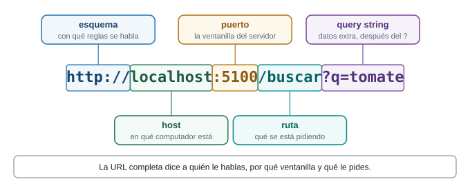
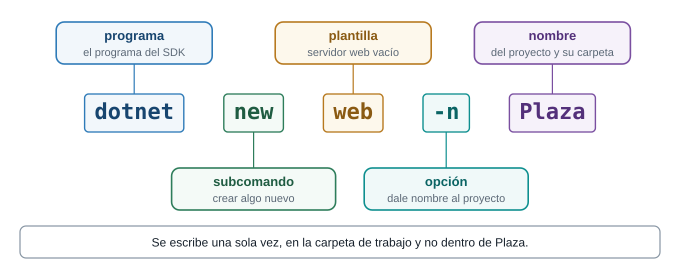
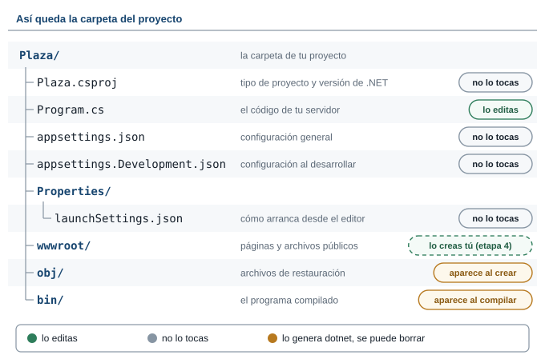
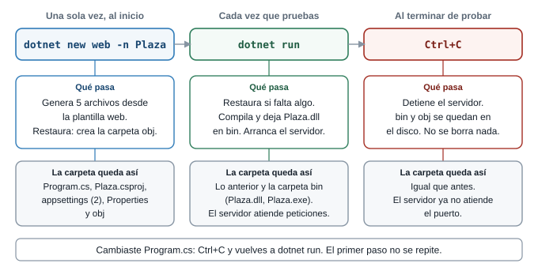
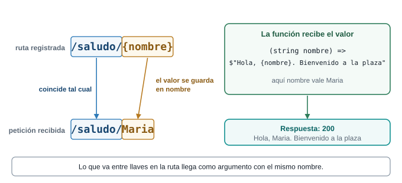
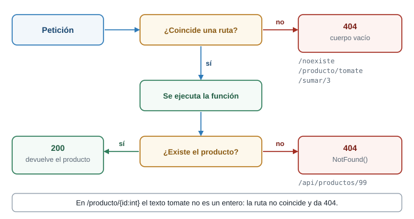
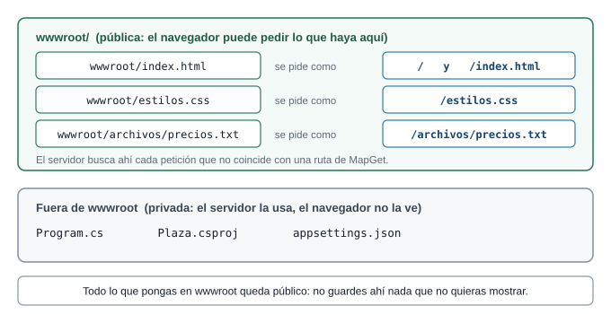
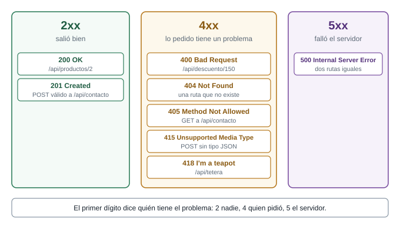

Semana 10. Mi servidor responde: rutas y respuestas
| Qué construyes | Un servidor propio, llamado Plaza, que responde texto, JSON, páginas HTML y archivos en las rutas que tú inventas |
| Prerrequisitos | Semana 8: peticiones HTTP, JSON y DevTools |
| Herramientas | .NET SDK 10, VS Code y una terminal |
| Tiempo | 1 h con el docente (etapas 0 a 3) y el resto en casa |
Presentación interactiva: el recorrido de una petición, con predicciones y retos
Si el tiempo de la clase no alcanza, este es el orden de prioridad:
- Esencial en la hora de clase: etapas 0, 1, 2 y 3, cada una con su predicción y su primer reto (en la etapa 0, el Reto 0).
- Para terminar en casa: etapas 4 y 5, y el segundo reto de cada etapa.
- Opcional siempre: los recuadros “Profundiza” y las pruebas con
curl. Puedes saltarlos y la guía sigue funcionando.
1 Herramientas que necesitas
Antes de la clase instala tres herramientas. Cada descarga pesa unos 200 MB, así que hazlo con buena conexión y un día antes, no en el salón.
| Herramienta | Para qué sirve | Dónde se descarga |
|---|---|---|
| .NET SDK 10 | Trae el comando dotnet, el compilador de C# y las plantillas para crear proyectos |
dotnet.microsoft.com/download/dotnet/10.0 |
| Visual Studio Code | El editor donde escribes el código y abres la terminal | code.visualstudio.com/download |
| Extensión de C# | Colores y ayudas al escribir C#. Es opcional: el código compila sin ella | Dentro de VS Code |
1. Instala el .NET SDK 10
Descarga el SDK, no el Runtime. El Runtime solo ejecuta programas ya hechos y no puede crear proyectos. El SDK ya incluye el Runtime.
Windows
- Abre
https://dotnet.microsoft.com/download/dotnet/10.0en el navegador. - Busca el bloque SDK 10.0.x (el primero de la página). En la fila Windows, columna Installers, haz clic en x64. Se descarga un archivo
.exe.- Si tu portátil tiene procesador ARM (por ejemplo Snapdragon), elige Arm64.
- Para saber cuál tienes: Configuración, Sistema, Acerca de, “Tipo de sistema”.
- Ejecuta el
.exe, acepta el permiso de administrador y pulsa Install. Espera a que termine. - Cierra todas las terminales y VS Code y abre una terminal nueva. Una terminal que estaba abierta durante la instalación no se entera de que
dotnetya existe.
Alternativa por terminal, si el instalador gráfico te da problemas:
winget install Microsoft.DotNet.SDK.10Mac
- En la misma página, fila macOS, columna Installers:
- Arm64 si tu Mac tiene chip Apple (M1, M2, M3 y siguientes).
- x64 si tiene procesador Intel.
- Para saberlo: menú Apple, “Acerca de este Mac”, y mira “Chip” o “Procesador”.
- Abre el archivo
.pkgdescargado y sigue “Continuar” hasta el final. Pide la contraseña del Mac. - Abre una terminal nueva.
Comprueba la instalación. En una terminal nueva escribe:
dotnet --versionDebe mostrar un número que empiece por 10., por ejemplo 10.0.302 o 10.0.402. Cualquier 10.0.x sirve. Si la terminal dice que dotnet no se reconoce, cierra la terminal y ábrela de nuevo. Si sigue igual, reinicia el computador y repite el comando.
2. Instala Visual Studio Code
Windows
- Entra a
https://code.visualstudio.com/downloady descarga el instalador de Windows (el User Installer x64 no pide permisos de administrador). - Ejecútalo. En la pantalla de tareas adicionales deja marcada la opción Agregar a PATH (Add to PATH). Gracias a ella podrás escribir
code .en la terminal para abrir una carpeta en VS Code. - Termina la instalación y abre VS Code desde el menú Inicio.
Mac
- En la misma página descarga el zip Universal (sirve para chip Apple e Intel).
- Descomprímelo y arrastra Visual Studio Code a la carpeta Aplicaciones.
- Abre VS Code, presiona
Cmd+Shift+Py ejecuta Shell Command: Install ‘code’ command in PATH. Eso habilitacode .en la terminal.
Comprueba la instalación. En una terminal nueva escribe:
code --versionDebe mostrar un número de versión. Si dice que code no se reconoce, cierra y abre la terminal; en Mac repite el comando de la paleta del paso 3.
3. Instala la extensión de C#
- En VS Code abre el panel de Extensiones: el icono de cuadritos de la barra izquierda, o
Ctrl+Shift+X. - Busca C# Dev Kit y confirma que el publicador sea Microsoft.
- Pulsa Install. Trae consigo la extensión C#, que es la que da colores y ayudas al escribir.
Dos cosas que debes saber:
- C# Dev Kit puede pedirte iniciar sesión con una cuenta de Microsoft o de GitHub. Si no quieres, busca e instala solo la extensión C# (publicada por Microsoft).
- Esta extensión es opcional. El código de la clase se compila y se ejecuta sin ella. Si no la instalas, solo pierdes los colores y las sugerencias.
Para ver qué extensiones tienes, escribe en la terminal:
code --list-extensions4. Comprobación final
Con una terminal nueva, estos dos comandos deben responder con un número de versión:
dotnet --version
code --versionSi ambos responden, tienes todo lo necesario. Sigue con “Preparación del entorno” más abajo, donde creas la carpeta de trabajo y abres la terminal en ella.
Los pasos de Windows se siguieron con el SDK 10.0.302. Las direcciones de descarga se comprobaron en octubre de 2026 y responden. No se probaron en un Mac la instalación del .pkg ni la de VS Code, y el texto de los instaladores y de los avisos de VS Code cambia con la versión: guíate por el sentido.
2 Lo que vas a lograr
Hasta la Semana 8 tu página pedía datos a un servidor que escribió otra persona. Hoy escribes tú el servidor. Partes de un proyecto vacío y, en seis etapas, lo haces responder cosas cada vez más interesantes: un texto, un dato en JSON, una página HTML y un archivo para descargar. La clase es un juego de crear rutas y mirar qué responde el servidor cuando le pides cosas distintas.
El proyecto se llama Plaza y vende productos campesinos. Todo se hace con un editor y la terminal: cada archivo lo escribes tú, lo ejecutas y ves qué cambió.

El cliente pide y el servidor responde. Esa conversación es todo lo que ocurre hoy.
Las seis etapas
Cada etapa agrega una sola idea y termina con algo que ejecutas y ves en el navegador.
| Etapa | Mi servidor responde… | Qué aprendes |
|---|---|---|
| 0 | Hello World! |
Cómo se crea un proyecto, qué es cada uno de sus archivos y cómo ejecutarlo |
| 1 | Varias rutas de texto | Qué es una ruta y cómo se registra con MapGet |
| 2 | Lo que le pides en la URL | Parámetros en la ruta y en el query string |
| 3 | Datos en JSON | Un record, una lista y Results.Json |
| 4 | Páginas HTML | Tipo de contenido, wwwroot y fetch |
| 5 | Estados y archivos | 200, 201, 400, 404, 418, descargas y POST |
Al terminar sabes:
- Crear un servidor con
dotnet new web, saber para qué sirve cada archivo que genera y leer cada línea de suProgram.cs. - Registrar rutas que devuelven texto, JSON, HTML y archivos.
- Leer datos de la ruta y del query string.
- Elegir el estado HTTP correcto para cada respuesta.
- Servir una página con su CSS y su JavaScript desde la carpeta
wwwroot. - Predecir qué responde tu servidor antes de pedirle algo.
3 Las palabras de la plaza
Para entender un servidor piensa en una plaza de mercado. Tú llegas, vas a un puesto, dices qué quieres, y el vendedor te entrega algo o te dice que no lo tiene. Un servidor web hace exactamente eso, con otros nombres:
| Palabra | Qué es, en palabras simples | En la plaza |
|---|---|---|
| Cliente | Quien pide. Tu navegador es un cliente. | El comprador que llega |
| Servidor | Un programa que espera peticiones y las contesta. Se queda encendido hasta que lo detienes. | El puesto que atiende |
| Petición | El mensaje que envía el cliente: qué quiere y dónde. | “Una libra de papa, por favor” |
| Respuesta | Lo que devuelve el servidor: un estado, un tipo de contenido y, casi siempre, un cuerpo. | El vendedor te entrega la bolsa |
| URL | La dirección completa de lo que pides. | El letrero con el puesto y el pasillo |
| Puerto | Un número que dice por cuál ventanilla atiende un programa dentro de un computador. Un computador tiene miles. | El número de la ventanilla |
| localhost | El nombre del computador en que estás. Pedir localhost es hablar con tu propia máquina. |
Tu casa |
| Ruta | La parte de la URL que viene después del puerto, como /saludo. Dice qué se pide. |
El pasillo |
| Estado HTTP | Un número de tres cifras con el que el servidor resume cómo le fue: 200 salió bien, 404 no hay eso. |
La cara del vendedor: “aquí tiene” o “eso no tengo” |
| Tipo de contenido | Una etiqueta que dice qué clase de dato viene en la respuesta: texto, HTML, JSON o una imagen. Con ella el navegador sabe qué hacer. | La etiqueta pegada a la bolsa |
Una URL tiene partes, y cada parte tiene su nombre. Vuelve a este dibujo cuando una palabra no te suene:

Cada parte de una URL responde una pregunta distinta.
4 Preparación del entorno
Antes de escribir una línea de código necesitas tres cosas: el .NET SDK 10 instalado, un editor (VS Code) y una carpeta donde guardar tus proyectos. Esta sección cubre los pasos 1 a 3. Los pasos 4 a 6, que crean y abren el proyecto, están en la etapa 0.
Paso 1. Comprueba que .NET está instalado
Abre una terminal y escribe:
dotnet --versionQué verás: un número de versión, por ejemplo 10.0.302. Si empieza por 10, estás listo. La guía se escribió y se probó con la versión 10.0.302. Los mensajes de dotnet salen en el idioma de tu sistema: aquí aparecen en español porque así salieron en la prueba.
Si la terminal dice que dotnet no se reconoce, el SDK no está instalado o la terminal no se enteró. Revisa la sección “Herramientas que necesitas” al inicio de esta guía, instala el SDK, cierra la terminal y ábrela de nuevo, y repite el comando.
Paso 2. Crea la carpeta de trabajo
La carpeta de trabajo es la carpeta donde viven todos tus proyectos de la clase. Plaza será una subcarpeta de ella. La creas una sola vez para todo el curso. Llámala Clases-Web: sin espacios y sin tildes, porque los comandos son más cómodos así.
Tienes dos caminos con el mismo resultado:
Con el Explorador de archivos. Entra a Documentos, haz clic derecho, elige Nuevo y Carpeta, y escribe
Clases-Web.Con la terminal. Escribe estos tres comandos, uno por línea:
cd ~/Documents mkdir Clases-Web cd Clases-Webcd ~/Documentsentra a la carpeta Documentos de tu usuario. En el Explorador se ve Documentos, pero en el disco se llamaDocuments.mkdir Clases-Webcrea la carpeta (mkdirviene de make directory, “hacer directorio”).cd Clases-Webentra a ella.
Después de
mkdir, PowerShell muestra una tabla con la carpeta recién creada:Directorio: C:\Users\tu-usuario\Documents Mode LastWriteTime Length Name ---- ------------- ------ ---- d----- 13/10/2026 8:58 p. m. Clases-WebTu ruta y tu fecha serán otras. Lo que importa es la letra
ddeModey el nombreClases-Web.
Los comandos de arriba funcionan en PowerShell, la terminal que VS Code abre por defecto en Windows, y en Git Bash. En cmd, el primero cambia a cd %USERPROFILE%\Documents. Si tu carpeta Documentos está sincronizada con OneDrive, la ruta real es otra: usa el Explorador.
Paso 3. Abre la terminal en esa carpeta y comprueba dónde estás
Abre la carpeta
Clases-Weben VS Code. Si la creaste con el Explorador, usa el menú Archivo y Abrir carpeta. Si la creaste con la terminal, escribecode .estando dentro de ella:codeabre VS Code y el punto significa “esta carpeta”.En VS Code, abre el menú Terminal y elige Nueva terminal. Aparece un panel inferior con una terminal que ya está ubicada en la carpeta abierta.
Comprueba la ubicación con
pwd(print working directory, “mostrar el directorio de trabajo”):pwdQué verás: una ruta que termina en
Clases-Web.Path ---- C:\Users\tu-usuario\Documents\Clases-WebEn
cmdel mismo dato lo da el comandocdsin nada más.
Por qué importa dónde estás. Todos los comandos de dotnet trabajan sobre la carpeta en que estés parado:
dotnet newcrea los archivos en esa carpeta.dotnet runbusca un archivo.csprojen esa carpeta.
Si estás en otra, el proyecto aparece en un lugar que no esperabas, o dotnet run no lo encuentra. Antes de un comando de dotnet, mira la ruta que muestra tu terminal (en PowerShell, el texto que termina en >, como PS C:\...\Clases-Web>) o escribe pwd.
Cómo se ejecuta cada etapa
Una vez creado el proyecto, en todas las etapas usarás el mismo comando, desde la carpeta del proyecto:
dotnet run --no-launch-profile --urls http://localhost:5100dotnet runcompila el proyecto y lo ejecuta.--urls http://localhost:5100fija en qué dirección y en qué puerto atiende el servidor. Así todos los equipos usan la misma.--no-launch-profileevita quedotnetlea el archivoProperties/launchSettings.json. Ese archivo trae un puerto distinto para cada proyecto y un nombre de entorno propio, y aquí queremos que todos usen lo mismo.
Para detener el servidor, presiona Ctrl+C en la terminal. Cada vez que cambies el código, detén el servidor y vuelve a ejecutar el comando.
Mirar la respuesta completa
El navegador solo muestra el cuerpo. Para ver también el estado y el tipo de contenido tienes dos caminos:
- La pestaña Red (Network) de DevTools, como en la Semana 8.
curl, una herramienta de terminal que pide una URL y escribe la respuesta. La opción-iagrega el estado y los encabezados:
curl -i http://localhost:5100/En Windows PowerShell curl es un alias de otro comando. Si te da un error raro, escribe curl.exe.
Los comandos y las salidas de esta guía se ejecutaron en una máquina con Windows 11 y el SDK 10.0.302, con curl 8.14.1 desde Git Bash. Las páginas HTML se abrieron en un navegador sin errores propios en la consola. Se comprobó que dotnet new web -n Plaza crea los archivos y las carpetas de la etapa 0, que bin y obj se regeneran al borrarlos, y que dotnet run sin opciones usa el perfil http de launchSettings.json. No se probaron otros sistemas operativos, la vista en un teléfono, el perfil https, el botón de ejecutar de Visual Studio, ni los mensajes de VS Code del paso 6: su texto exacto depende de la versión del editor y de la extensión. Cuando algo no se probó, la guía lo dice.
5 Etapa 0. Hola mundo
Qué vas a lograr
Crear un proyecto desde cero, entender para qué sirve cada archivo que aparece en su carpeta, encenderlo y ver que responde. Al terminar tienes un programa de cuatro instrucciones escuchando en tu computador.
Cuando tengas el servidor encendido en http://localhost:5100/, ¿qué crees que responde si alguien pide http://localhost:5100/otra, una dirección que no programaste? Apuesta: un error, un texto de bienvenida o nada.
Un 404, con el cuerpo vacío. El servidor solo sabe responder las rutas que le registraste. Para cualquier otra dice “no tengo eso”.
Paso 4. Crea el proyecto
El comando de abajo genera un servidor web completo. ¿Cuántos archivos crees que crea: uno, cinco o cincuenta?
Cinco archivos tuyos, repartidos en una carpeta nueva (Plaza) y una subcarpeta (Properties), y otros cinco dentro de una carpeta obj. Son diez en total. Un servidor web completo cabe en cinco archivos pequeños. La carpeta bin todavía no existe: aparece cuando compilas.
Con la terminal ubicada en Clases-Web (lo comprobaste con pwd en el paso 3), escribe:
dotnet new web -n Plaza
Cada palabra del comando cumple un oficio distinto.
| Parte | Qué significa |
|---|---|
dotnet |
El programa que instalaste con el SDK. Todo comando de .NET empieza por él. |
new |
“Crea algo nuevo a partir de una plantilla”. |
web |
El nombre de la plantilla. Una plantilla es un molde: una lista de archivos ya escritos. web es el molde más pequeño de un servidor web, casi vacío. Existen moldes más grandes con más archivos de ejemplo. |
-n |
Una opción del comando. Significa name, “nombre”, y va seguida del nombre elegido. |
Plaza |
El nombre del proyecto. Con él se nombra la carpeta nueva y el archivo Plaza.csproj. |
Qué hace, en palabras simples. dotnet new toma la plantilla web y la convierte en archivos reales dentro de una carpeta nueva llamada Plaza. Al final hace una restauración (restore): revisa qué bibliotecas necesita el proyecto, las deja listas y guarda esa información en una carpeta llamada obj. Por eso, después del comando, tienes cinco archivos tuyos y la carpeta obj.
La salida fue:
La plantilla "ASP.NET Core vacío" se creó correctamente.
Procesando acciones posteriores a la creación...
Restaurando ...\Plaza\Plaza.csproj:
Determinando los proyectos que se van a restaurar...
Se ha restaurado ...\Plaza\Plaza.csproj (en 109 ms).
Restauración realizada correctamente.La plantilla ... se creó correctamentesignifica que los cinco archivos ya existen.RestaurandoySe ha restauradoson la restauración: aquí se creaobj.
- Dónde: en la carpeta de trabajo (
Clases-Web), fuera de cualquier proyecto. El comando crea la carpetaPlazapor ti: no la crees antes. - Cuándo: una sola vez por proyecto, al inicio. Las etapas 1 a 5 no lo repiten. Trabajan sobre este mismo proyecto y solo reemplazan el contenido de
Program.cs. - Sin
-n: si lo omites,dotnet new webcrea los archivos directamente en la carpeta donde estás y usa el nombre de esa carpeta como nombre del proyecto. En esta guía siempre se usa-n.
Paso 5. Entra a la carpeta y ábrela en VS Code
cd Plaza
code .cd Plaza(change directory, “cambiar de directorio”) entra a la carpetaPlaza. Ahorapwdtermina en...\Clases-Web\Plaza. Para volver a la carpeta anterior se escribecd ...code .abre VS Code en la carpeta donde estás. AbrePlaza, noClases-Web: así el archivoProgram.csqueda a la vista y la terminal integrada nace ubicada en el proyecto.
Si la terminal dice que code no se reconoce, usa el menú de VS Code: Archivo, Abrir carpeta y elige Plaza.
Qué verás: una ventana de VS Code con el panel Explorador a la izquierda, que lista los archivos del proyecto. Abre una terminal con el menú Terminal y Nueva terminal, y escribe pwd: la ruta termina en Plaza. Desde aquí, todos los comandos de la clase se escriben en esa terminal.
Paso 6. Los mensajes que puede mostrar VS Code
Al abrir un proyecto por primera vez, VS Code muestra ventanas emergentes. Estas son las tres más comunes. El texto exacto cambia según la versión y el idioma del editor.
| Mensaje | Qué significa | Qué responder |
|---|---|---|
| Pregunta si confías en los autores de los archivos de la carpeta | VS Code abre las carpetas desconocidas en un modo restringido, que desactiva extensiones y tareas | Sí, confío en los autores. La carpeta la creaste tú |
| Recomienda instalar la extensión de C# | La extensión de Microsoft da colores y ayudas al escribir | Instalar. El código se compila y se ejecuta también sin ella |
Dice que faltan los “assets” requeridos para compilar y depurar Plaza y pregunta si quieres agregarlos |
Ofrece crear una carpeta .vscode con la configuración del depurador |
Sí o Ahora no: esta guía no usa el depurador. Si aceptas, aparece .vscode y tampoco la tocas |
Qué creó el comando
Cuando termina dotnet new web -n Plaza, la carpeta tiene estos diez archivos. Los cinco primeros son tuyos. Los de obj los crea la restauración:
Plaza/
Plaza.csproj
Program.cs
appsettings.json
appsettings.Development.json
Properties/
launchSettings.json
obj/
Plaza.csproj.nuget.dgspec.json
Plaza.csproj.nuget.g.props
Plaza.csproj.nuget.g.targets
project.assets.json
project.nuget.cache
Un solo archivo para editar. La carpeta bin no existe hasta que compilas por primera vez.
| Archivo o carpeta | Para qué sirve | ¿Lo editas? |
|---|---|---|
Plaza.csproj |
Dice qué tipo de proyecto es y con qué versión de .NET se compila | No |
Program.cs |
El código de tu servidor | Sí, en todas las etapas |
appsettings.json |
Configuración general que el programa lee al arrancar | No |
appsettings.Development.json |
Configuración extra que solo se lee cuando desarrollas | No |
Properties/launchSettings.json |
Cómo arranca el proyecto desde el editor: puerto y entorno | No |
wwwroot/ |
Páginas y archivos públicos. No existe todavía: la creas en la etapa 4 | Sí, desde la etapa 4 |
obj/ |
Archivos de restauración. Aparece al crear el proyecto | Nunca |
bin/ |
El programa compilado. Aparece al compilar o ejecutar | Nunca |
Plaza.csproj
.csproj abrevia C# project, “proyecto de C#”. Es un archivo de texto en formato XML: etiquetas que se abren y se cierran, como en HTML. Este es su contenido completo:
<Project Sdk="Microsoft.NET.Sdk.Web">
<PropertyGroup>
<TargetFramework>net10.0</TargetFramework>
<Nullable>enable</Nullable>
<ImplicitUsings>enable</ImplicitUsings>
</PropertyGroup>
</Project>| Línea | Qué dice, en palabras simples |
|---|---|
<Project Sdk="Microsoft.NET.Sdk.Web"> |
“Este proyecto usa las herramientas del SDK para aplicaciones web”. Con esa palabra Web, dotnet run sabe que debe arrancar un servidor |
<PropertyGroup> |
Abre un grupo de ajustes del proyecto |
<TargetFramework>net10.0</TargetFramework> |
La versión de .NET con la que se compila y se ejecuta: .NET 10 |
<Nullable>enable</Nullable> |
C# te avisa cuando un valor puede venir vacío (null). Por eso más adelante escribirás string? q |
<ImplicitUsings>enable</ImplicitUsings> |
C# agrega por ti las referencias a las bibliotecas más comunes. Por eso Program.cs no empieza con una lista de using |
dotnet run busca este archivo en la carpeta donde estés. Si no hay ningún .csproj, no sabe qué ejecutar.
Program.cs
Es el código del servidor y el único archivo que editas. El comando lo crea con las mismas cuatro instrucciones que ves en la sección “El código”, más abajo: CreateBuilder, Build, un MapGet y Run. La única diferencia es la primera línea, un comentario con // que agregó esta guía.
appsettings.json
Una configuración es un valor que el programa lee al arrancar y que puedes cambiar sin tocar el código C#. Está escrita en JSON, el mismo formato que usaste en la Semana 8:
{
"Logging": {
"LogLevel": {
"Default": "Information",
"Microsoft.AspNetCore": "Warning"
}
},
"AllowedHosts": "*"
}Loggingcontrola los mensajes que el servidor escribe en la consola, los que empiezan porinfo:cuando lo enciendes.LogLevelfija cuánto detalle mostrar. Los niveles van de menos serio a más serio:Trace,Debug,Information,Warning,ErroryCritical."Default": "Information"significa “muestra los mensajes informativos y los más serios”."Microsoft.AspNetCore": "Warning"dice que los mensajes internos del framework solo se muestran si son advertencias o errores. Por eso no ves una línea en la consola por cada petición.AllowedHostses la lista de nombres de sitio que el servidor acepta en una petición."*"significa “cualquiera”.
appsettings.Development.json
{
"Logging": {
"LogLevel": {
"Default": "Information",
"Microsoft.AspNetCore": "Warning"
}
}
}Por qué hay dos. appsettings.json se lee siempre. appsettings.Development.json se lee además cuando el entorno se llama Development (desarrollo) y sus valores ganan sobre los del primero. Es el lugar para ajustes que solo valen mientras programas.
Cuál se usa cuándo. El nombre del entorno sale de launchSettings.json, que dice Development. Con dotnet run a secas, el entorno es Development y se leen los dos archivos. Con el comando de la clase, que lleva --no-launch-profile, dotnet no lee launchSettings.json, el nombre del entorno queda en su valor por defecto, Production, y solo se lee appsettings.json. En la prueba, la línea Hosting environment de la consola dijo Production. En este proyecto los dos archivos dicen lo mismo en Logging, así que no notas ninguna diferencia.
Properties/launchSettings.json
El contenido de tu archivo se ve así. Los números de puerto serán otros: dotnet new elige un puerto al azar para cada proyecto, y por eso el tuyo no dirá 5120 ni 7097.
{
"$schema": "https://json.schemastore.org/launchsettings.json",
"profiles": {
"http": {
"commandName": "Project",
"dotnetRunMessages": true,
"launchBrowser": true,
"applicationUrl": "http://localhost:5120",
"environmentVariables": {
"ASPNETCORE_ENVIRONMENT": "Development"
}
},
"https": {
"commandName": "Project",
"dotnetRunMessages": true,
"launchBrowser": true,
"applicationUrl": "https://localhost:7097;http://localhost:5120",
"environmentVariables": {
"ASPNETCORE_ENVIRONMENT": "Development"
}
}
}
}| Campo | Qué significa |
|---|---|
$schema |
Un enlace que el editor usa para ayudarte a escribir el archivo. No cambia el programa |
profiles |
La lista de formas de arrancar el proyecto. Cada una es un perfil con su nombre: aquí http y https |
commandName: "Project" |
Arranca el proyecto como un programa propio |
dotnetRunMessages |
Muestra mensajes de progreso de dotnet run, como Compilando... |
launchBrowser |
Pide al editor que abra el navegador al arrancar. Visual Studio lo usa. dotnet run no lo hace: en la prueba no abrió el navegador |
applicationUrl |
La dirección y el puerto en que atiende el servidor. El perfil https lista dos, separadas por ; |
ASPNETCORE_ENVIRONMENT |
El nombre del entorno. Development activa appsettings.Development.json |
Quién lo usa. Lo usa dotnet run cuando no lleva --no-launch-profile, que toma el primer perfil (http), y lo usa el botón de ejecutar de Visual Studio. El comando de la clase lo ignora a propósito. La guía no usa el perfil https.
Si ejecutas dotnet run sin ninguna opción, dotnet avisa que usa el archivo y atiende en el puerto de tu applicationUrl. En la prueba, con un proyecto cuyo puerto era 5239, salió:
Usando la configuración de inicio de ...\Plaza\Properties\launchSettings.json...
Compilando...
info: Microsoft.Hosting.Lifetime[14]
Now listening on: http://localhost:5239
info: Microsoft.Hosting.Lifetime[0]
Application started. Press Ctrl+C to shut down.
info: Microsoft.Hosting.Lifetime[0]
Hosting environment: DevelopmentSi además agregas --urls, el puerto de --urls gana sobre el del archivo. El entorno sigue siendo Development, porque eso sale del perfil.
La carpeta obj
obj guarda el resultado de la restauración: la lista de lo que el proyecto necesita para compilarse. Los archivos Plaza.csproj.nuget.*, project.assets.json y project.nuget.cache son anotaciones de NuGet, el sistema que .NET usa para traer paquetes. El proyecto vacío no necesita paquetes extra, así que la lista de project.assets.json queda sin bibliotecas. Cuando compilas, obj se llena además de archivos intermedios, hasta unos 27 archivos en la prueba. No los abres.
La carpeta bin
bin (de binarios) aparece cuando compilas, por ejemplo con tu primer dotnet run. Compilar es convertir tu Program.cs en un programa que el computador sabe ejecutar. Dentro, en bin/Debug/net10.0/, quedan estos archivos:
| Archivo | Qué es |
|---|---|
Plaza.dll |
Tu código ya compilado. Es el programa |
Plaza.exe |
El ejecutable de Windows que arranca ese programa |
Plaza.pdb |
Información extra para depurar |
Plaza.deps.json y Plaza.runtimeconfig.json |
Qué bibliotecas y qué versión de .NET necesita el programa |
appsettings.json y appsettings.Development.json |
Copias de tus archivos de configuración |
Debug es el modo de compilación por defecto, pensado para programar. net10.0 es la versión de .NET del Plaza.csproj.
Qué editas y qué no tocas nunca
- Editas
Program.csen todas las etapas y, desde la etapa 4, los archivos dewwwroot. - No tocas nunca
binniobj. Los generadotnet. - No tocas hoy
Plaza.csproj,appsettingsnilaunchSettings.json. Existen y el proyecto los necesita, pero ninguna etapa de esta guía los cambia.
bin y obj se pueden borrar sin riesgo. Cada dotnet run los regenera. En la prueba, se borraron las dos carpetas, se ejecutó dotnet build (compila sin arrancar) y volvieron a aparecer. Lo que no puedes borrar son los cinco archivos de la primera columna.
El código
Abre Program.cs. Este es todo el servidor:
// Etapa 0: el proyecto tal como lo crea "dotnet new web".
var builder = WebApplication.CreateBuilder(args);
var app = builder.Build();
// Una sola ruta: cuando alguien pide "/" respondemos con este texto.
app.MapGet("/", () => "Hello World!");
app.Run();Línea por línea, con lo que significa cada palabra:
var builder = WebApplication.CreateBuilder(args);Pide al framework un constructor: el ayudante que monta el puesto antes de abrir.varle dice a C# “deduce tú el tipo de esta variable”.argsson los argumentos con que ejecutaste el programa, por ejemplo--urls.var app = builder.Build();Monta el puesto.appes la aplicación lista para recibir peticiones.app.MapGet("/", () => "Hello World!");Pone un letrero: cuando alguien pida la ruta/con el método GET, ejecuta esta función y responde con su resultado.app.Run();Abre el puesto y atiende hasta que lo detengas conCtrl+C.
MapGetune una ruta con una función. GET es el método que usa el navegador cuando escribes una URL: significa “dame esto”.() => "Hello World!"es una función sin nombre, también llamada lambda. Lo que está a la izquierda de=>son los datos que recibe (aquí ninguno, por eso los paréntesis vacíos) y lo que está a la derecha es lo que devuelve.- Un texto entre comillas dobles,
"...", se llama cadena. - Cada instrucción termina en
;.
Ejecutarlo
En la terminal de VS Code, ubicada en Plaza, escribe el comando de la sección “Cómo se ejecuta cada etapa”:
dotnet run --no-launch-profile --urls http://localhost:5100La consola muestra:
info: Microsoft.Hosting.Lifetime[14]
Now listening on: http://localhost:5100
info: Microsoft.Hosting.Lifetime[0]
Application started. Press Ctrl+C to shut down.
info: Microsoft.Hosting.Lifetime[0]
Hosting environment: Production
info: Microsoft.Hosting.Lifetime[0]
Content root path: ...\PlazaNow listening on: http://localhost:5100 es el servidor avisando por qué ventanilla atiende. La línea Hosting environment dice Production porque este comando no lee launchSettings.json, donde está el nombre Development. No cambia nada de lo que haces hoy.
Cuando escribes dotnet run, dotnet hace cuatro cosas, siempre en este orden:
- Busca el proyecto. Mira la carpeta actual en busca de un archivo
.csproj. Si no hay ninguno, se detiene con un mensaje. - Restaura si hace falta. Si falta la carpeta
objo cambió lo que el proyecto necesita, repite la restauración. La primera vez no hace falta, porquedotnet newya la hizo. - Compila. Convierte
Program.csenPlaza.dlldentro debin/Debug/net10.0/. Si nada cambió desde la última vez, reutiliza lo compilado. - Arranca. Ejecuta el programa compilado, lee los
appsettings, abre el puerto y se queda esperando peticiones hasta que presionasCtrl+C.
Si cambias Program.cs y no reinicias, el servidor sigue ejecutando el Plaza.dll de la vez anterior. Guardar el archivo no vuelve a compilar nada, así que el servidor responde lo de antes. Para ver el cambio: Ctrl+C y dotnet run otra vez.

El primer comando se ejecuta una vez. Los otros dos se repiten en cada prueba.
Abre http://localhost:5100/ en el navegador. Esto responde el servidor:
| Petición | Estado | Tipo de contenido | Cuerpo |
|---|---|---|---|
GET / |
200 OK |
text/plain; charset=utf-8 |
Hello World! |
GET /otra |
404 Not Found |
(ninguno) | vacío |
Con curl la primera respuesta se ve así:
$ curl -i http://localhost:5100/
HTTP/1.1 200 OK
Content-Type: text/plain; charset=utf-8
Hello World!Presiona Ctrl+C para detener el servidor.
Qué pasó por dentro
- Ejecutaste
dotnet run: el SDK compilóProgram.csy arrancó el programa. - El programa abrió el puerto
5100y se quedó esperando. - Escribiste
http://localhost:5100/y el navegador envióGET /a ese puerto. - El servidor buscó entre sus rutas una que coincidiera con
GET /. Encontró la única que hay. - Ejecutó la función, que devolvió
"Hello World!". - Respondió con estado
200, tipotext/plainy ese texto como cuerpo. - El navegador vio
text/plainy mostró el texto tal cual.
Retos de la etapa 0
Abre cada archivo del proyecto en VS Code, sin ejecutar nada, y responde: ¿qué archivo cambiarías para…
- cambiar el puerto en que atiende el servidor,
- cambiar la versión de .NET con que se compila,
- cambiar el texto que responde la ruta
/?
Escribe el nombre del archivo y la línea que tocarías.
Properties/launchSettings.json, la línea"applicationUrl": "http://localhost:5120"de un perfil (el número será el de tu proyecto). Con el comando de la clase, que lleva--no-launch-profiley--urls, ese archivo no se lee: ahí el puerto se cambia en--urls http://localhost:5100.appsettings.jsonno tiene nada que ver con el puerto.Plaza.csproj, la línea<TargetFramework>net10.0</TargetFramework>. En la clase déjala como está: otra versión te obligaría a tener esa versión de .NET instalada y tu proyecto dejaría de parecerse al de tus compañeros.Program.cs, la líneaapp.MapGet("/", () => "Hello World!");. El texto está entre comillas, a la derecha de=>. Es el único archivo que editas en esta etapa.
Cambia el texto de la ruta / para que el servidor responda Soy y tu nombre. Reinicia el servidor y recarga la página.
app.MapGet("/", () => "Soy Rosa");Detén el servidor con Ctrl+C, ejecútalo de nuevo y recarga. Si no reinicias, el servidor sigue ejecutando el programa anterior, porque el código nuevo todavía no se compiló.
Cambia "/" por "/hola". Reinicia y pide / y /hola. Antes de hacerlo, predice qué estado recibes en cada una.
app.MapGet("/hola", () => "Hello World!");/hola responde 200 con Hello World!. / responde 404 con el cuerpo vacío, porque ya no hay ninguna ruta registrada para /. La ruta es parte de la respuesta: cambiar la ruta cambia qué direcciones existen.
Cierre de la etapa 0
- Qué cambió: el proyecto nace. Hay una carpeta
Plazacon cinco archivos, una carpetaobjy un servidor con una sola ruta. - Cómo verificarlo: ejecuta el comando y abre
http://localhost:5100/. - Qué debes ver:
Hello World!, un404en/otray, en la consola,Now listening on. Después de ejecutar, la carpetabinaparece junto aobj.
6 Etapa 1. Varias rutas
Qué vas a lograr
Un servidor con cuatro rutas, cada una con su respuesta. Empiezas a “jugar”: crear una ruta, pedirla y ver qué pasa.
La idea: una ruta es un pasillo
Piensa en los pasillos de la plaza: en el de las frutas hay frutas, en el de los granos hay granos. Una ruta es el nombre de ese pasillo, y con MapGet le dices al servidor qué entregar cuando alguien lo visite. Cuantas más rutas registres, más pasillos tiene tu plaza.
Abres /hora, esperas unos segundos y la abres otra vez. ¿Qué crees que verás: la misma hora las dos veces o una distinta? ¿Qué te dice eso sobre cuándo se ejecuta la función?
Una hora distinta. La función de la ruta se ejecuta en cada petición, no una vez al arrancar el servidor. Por eso la respuesta se calcula en el momento.
El código
Reemplaza el contenido de Program.cs por:
// Etapa 1: varias rutas que responden texto.
var builder = WebApplication.CreateBuilder(args);
var app = builder.Build();
// Cada MapGet une una dirección (la ruta) con lo que se responde.
app.MapGet("/", () => "Bienvenido a la Plaza Campesina");
app.MapGet("/saludo", () => "Hola, buenos días desde la plaza");
app.MapGet("/acerca", () => "Plaza: una tienda de productos campesinos hecha con ASP.NET Core");
// La respuesta puede calcularse en el momento de la petición.
app.MapGet("/hora", () => $"Son las {DateTime.Now:HH:mm:ss}");
app.Run();//inicia un comentario: texto para humanos que el compilador ignora.$"Son las {DateTime.Now:HH:mm:ss}"es una cadena interpolada. El$antes de las comillas habilita huecos: lo que va entre llaves es código C# y su valor se pega en el texto.DateTime.Nowes la fecha y la hora de este computador.:HH:mm:sses el formato: hora de 0 a 23, minutos y segundos.
Ejecutarlo
Ejecuta y pide cada ruta en el navegador:
| Petición | Estado | Tipo de contenido | Cuerpo |
|---|---|---|---|
GET / |
200 OK |
text/plain; charset=utf-8 |
Bienvenido a la Plaza Campesina |
GET /saludo |
200 OK |
text/plain; charset=utf-8 |
Hola, buenos días desde la plaza |
GET /acerca |
200 OK |
text/plain; charset=utf-8 |
Plaza: una tienda de productos campesinos hecha con ASP.NET Core |
GET /hora |
200 OK |
text/plain; charset=utf-8 |
Son las 19:39:07 (la hora cambia) |
GET /noexiste |
404 Not Found |
(ninguno) | vacío |
Con curl, la última se ve así:
$ curl -i http://localhost:5100/noexiste
HTTP/1.1 404 Not Found
Content-Length: 0
Qué pasó por dentro
Para GET /saludo:
- El navegador envía
GET /saludo. - El servidor recorre las rutas registradas y compara la ruta pedida con cada una.
"/saludo"coincide con la segunda. Las otras no.- Ejecuta esa función. Devuelve el texto
Hola, buenos días desde la plaza. - Responde
200con tipotext/plain.
Para GET /noexiste el paso 3 no encuentra ninguna coincidencia. El servidor no ejecuta ninguna función y responde 404 sin cuerpo.
Una comodidad: dotnet watch
Detener y volver a ejecutar cansa. dotnet watch vigila tus archivos y recarga cuando guardas:
dotnet watch run --no-launch-profile --urls http://localhost:5100Lo que se observó al probarlo:
- Cambiar el texto de una ruta que ya existe se aplica sin reiniciar. La consola mostró
File updated: .\Program.csyC# and Razor changes applied in 4530ms.Tarda unos 5 segundos. - Agregar una ruta nueva sí exige reiniciar. Mostró
Restart is needed to apply the changes.y volvió a compilar todo.
Si dotnet watch no reinicia solo, detenlo con Ctrl+C y ejecútalo de nuevo. Con dotnet run a secas, nada se recarga: reinicias tú. En una terminal normal dotnet watch te pregunta si reinicia; esa pregunta no se pudo probar al preparar la guía.
Retos de la etapa 1
Crea la ruta /nombre que devuelva Me llamo y tu nombre. Pídela en el navegador.
Agrega esta línea antes de app.Run();:
app.MapGet("/nombre", () => "Me llamo Rosa");Reinicia el servidor y abre http://localhost:5100/nombre. Responde 200, text/plain y el texto. Es una ruta nueva, así que necesitas reiniciar.
Crea la ruta /fecha que responda Hoy es seguido de la fecha en formato día/mes/año. Usa la cadena interpolada y DateTime.Now, como en /hora.
app.MapGet("/fecha", () => $"Hoy es {DateTime.Now:dd/MM/yyyy}");Al pedirla responde Hoy es 13/10/2026 (con la fecha de tu computador). Dentro de las llaves, lo que va después de los dos puntos es el formato: dd día, MM mes (en mayúscula, porque mm son minutos) y yyyy el año.
Cierre de la etapa 1
- Qué cambió:
Program.cstiene cuatro rutas de texto. - Cómo verificarlo: pide
/,/saludo,/acerca,/horay/noexiste. - Qué debes ver: cuatro textos con
200y un404vacío.
7 Etapa 2. Datos en la URL
Qué vas a lograr
Que el servidor use lo que le pides en la URL. Con una sola ruta puedes saludar a cualquier persona o buscar cualquier producto.
La idea: el pedido dentro de la dirección
En la plaza no tienes un puesto por cada comprador. Llegas al puesto y dices “una libra de papa”. El puesto es la ruta y la papa es el parámetro. En una URL hay dos lugares para ese dato:
- En la ruta:
/saludo/Maria. La parte variable es un segmento más del camino. - En el query string:
/buscar?q=tomate. Va después del signo?, como una nota pegada al final de la dirección, con la formanombre=valor.
Un parámetro es un dato que el servidor recibe para decidir qué responder.

Lo que va entre llaves en la ruta llega a la función con el mismo nombre.
La ruta /producto/{id:int} dice que id debe ser un número entero. Si pides /producto/tomate, ¿qué crees que responde: un mensaje de error, un 400 o un 404?
Un 404 con el cuerpo vacío. Para el servidor, /producto/tomate simplemente no coincide con la ruta /producto/{id:int}: es como pedir un pasillo que no existe.
El código
Reemplaza Program.cs por:
// Etapa 2: rutas que reciben datos (parámetros en la ruta y query string).
var builder = WebApplication.CreateBuilder(args);
var app = builder.Build();
app.MapGet("/", () => "Bienvenido a la Plaza Campesina");
// Parámetro en la ruta: lo que va entre llaves llega como argumento del mismo nombre.
// Ejemplo: /saludo/Maria
app.MapGet("/saludo/{nombre}", (string nombre) => $"Hola, {nombre}. Bienvenido a la plaza");
// Restricción {id:int}: la ruta solo coincide si el valor es un número entero.
// Ejemplo: /producto/7 responde; /producto/tomate no coincide con ninguna ruta (404).
app.MapGet("/producto/{id:int}", (int id) => $"Producto número {id}");
// Sin restricción: acepta cualquier texto.
// Ejemplo: /vendedor/rosa
app.MapGet("/vendedor/{nombre}", (string nombre) => $"Vendedor: {nombre}");
// Query string: lo que va después del signo ? en la dirección.
// Ejemplo: /buscar?q=tomate. Si "q" no viene, usamos "todo" como valor por defecto.
app.MapGet("/buscar", (string? q) => $"Buscando: {q ?? "todo"}");
// Dos parámetros en la ruta. Ejemplo: /sumar/3/4
app.MapGet("/sumar/{a:int}/{b:int}", (int a, int b) => $"{a} + {b} = {a + b}");
app.Run();(string nombre) => ...es una lambda que recibe un dato. El nombre del parámetro debe coincidir con el de las llaves de la ruta:{nombre}ynombre.stringes texto yintes un número entero.{id:int}es una restricción: la ruta solo coincide si el segmento es un entero.string? qcon signo de interrogación significa “puede no venir”. Cuando falta, valenull, que es “nada”.q ?? "todo"significa “usaq, y si no vino, usatodo”.- Dentro de una cadena interpolada puede ir una operación:
{a + b}.
Ejecutarlo
Prueba estas peticiones. Las que llevan ? o & ponlas entre comillas si usas la terminal.
| Petición | Estado | Cuerpo |
|---|---|---|
/saludo/Maria |
200 |
Hola, Maria. Bienvenido a la plaza |
/saludo/María |
200 |
Hola, María. Bienvenido a la plaza |
/producto/7 |
200 |
Producto número 7 |
/producto/tomate |
404 |
vacío |
/producto/3.5 |
404 |
vacío |
/vendedor/rosa |
200 |
Vendedor: rosa |
/buscar?q=tomate |
200 |
Buscando: tomate |
/buscar |
200 |
Buscando: todo |
/buscar?q= |
200 |
Buscando: (vacío, no todo) |
/buscar?q=tomate&q=papa |
200 |
Buscando: tomate,papa |
/sumar/3/4 |
200 |
3 + 4 = 7 |
/sumar/3/x |
404 |
vacío |
/sumar/3 |
404 |
vacío |
Tres cosas para notar:
- Dos ceros distintos.
/buscary/buscar?q=no responden igual. Sinq, el valor esnully se usatodo. Conq=vacío, el valor es un texto vacío, que no esnull. :intfalla con404./sumar/3/xno tiene la forma{a:int}/{b:int}, así que la ruta no coincide y el servidor no ejecuta nada.- Si repites
q, el servidor junta los valores con coma.
Qué pasó por dentro
Para GET /sumar/3/4:
- El servidor parte la ruta en segmentos:
sumar,3y4. - Compara con
/sumar/{a:int}/{b:int}: el primero es literal y coincide;3y4son enteros y cumplen la restricción. - Guarda
a = 3yb = 4. - Ejecuta la función con esos valores. Calcula
a + by arma el texto3 + 4 = 7. - Responde
200con ese texto.
Con /sumar/3/x el paso 2 falla en x: no es un entero. No hay otra ruta que coincida, así que el resultado es 404.
Si registras /producto/{id:int} y también /producto/{nombre}, el servidor elige la más específica. En la prueba, /producto/5 respondió con la ruta del entero y /producto/tomate con la del texto. Solo se probó en ese orden de declaración.
Algo parecido pasa con una ruta literal y una con parámetro: con /dato/{n} y /dato/especial declaradas, /dato/especial la atendió la literal.
Retos de la etapa 2
Crea una ruta que reste dos números: /restar/10/4 debe responder 10 - 4 = 6. Pruébala también con /restar/4/10.
app.MapGet("/restar/{a:int}/{b:int}", (int a, int b) => $"{a} - {b} = {a - b}");/restar/10/4 responde 10 - 4 = 6 y /restar/4/10 responde 4 - 10 = -6. También acepta negativos: /restar/-3/2 responde -3 - 2 = -5.
Crea /hola que lea el parámetro nombre del query string. /hola?nombre=Rosa responde Hola, Rosa y /hola sin nada responde Hola, visitante.
app.MapGet("/hola", (string? nombre) => $"Hola, {nombre ?? "visitante"}");Como nombre no aparece entre llaves en la ruta, C# lo busca en el query string. El ? del tipo string? permite que falte, y ?? pone el valor por defecto.
Cierre de la etapa 2
- Qué cambió: las rutas reciben datos de la ruta y del query string.
- Cómo verificarlo: pide
/saludo/Maria,/producto/7,/producto/tomatey/buscar?q=tomate. - Qué debes ver: tres respuestas
200con texto y un404vacío paratomate.
8 Etapa 3. Responder JSON
Qué vas a lograr
Que el servidor devuelva datos y no solo frases: la lista de productos de la plaza, en el formato que cualquier programa puede leer.
La idea: una ficha de producto
JSON es un formato de texto para datos. Un objeto se escribe entre llaves, con pares "clave": valor. Una lista va entre corchetes. Es el formato que usaste con fetch en la Semana 8:
{"id": 1, "nombre": "Tomate", "precio": 3500}Para que el servidor arme ese texto, primero necesita saber qué forma tiene un producto. En C# eso se define con un record: una ficha con campos fijos, de solo datos.
record Producto(int Id, string Nombre, decimal Precio);Esa línea dice “un Producto tiene un Id entero, un Nombre de texto y un Precio decimal”.
El record tiene campos con mayúscula inicial: Id, Nombre, Precio. Cuando el servidor lo convierta a JSON, ¿cómo crees que se escribirán las claves: Nombre o nombre? ¿Y qué tipo de contenido tendrá la respuesta?
Las claves salen en minúscula: "id", "nombre", "precio". El framework convierte los nombres al estilo habitual de JSON sin que lo pidas. El tipo de contenido es application/json, y por eso el navegador sabe que es JSON y no una frase.
El código
Reemplaza Program.cs por:
// Etapa 3: responder datos en formato JSON.
var builder = WebApplication.CreateBuilder(args);
var app = builder.Build();
// Una lista en memoria con los productos de la plaza.
var productos = new List<Producto>
{
new(1, "Tomate", 3500m),
new(2, "Aguacate", 6000m),
new(3, "Papa", 2800m),
new(4, "Panela", 4500m),
};
app.MapGet("/", () => "Plaza Campesina: pruebe /api/productos");
// Si devolvemos un objeto o una lista, se convierte a JSON automáticamente.
app.MapGet("/api/productos", () => productos);
// Un objeto anónimo también sirve: se crea al vuelo con "new { ... }".
app.MapGet("/api/estado", () => new { ok = true, tienda = "Plaza", total = productos.Count });
// Results.Json y Results.NotFound nos dejan elegir qué se responde en cada caso.
app.MapGet("/api/productos/{id:int}", (int id) =>
{
var producto = productos.FirstOrDefault(p => p.Id == id);
if (producto is null)
{
return Results.NotFound(); // 404 si no existe
}
return Results.Json(producto); // 200 con el producto en JSON
});
app.Run();
// Un record es una forma corta de declarar una clase de solo datos.
record Producto(int Id, string Nombre, decimal Precio);record Producto(...)declara una clase de solo datos en una línea. Va al final del archivo, después de las instrucciones.List<Producto>es una lista que guarda productos. El tipo entre<y>es el de sus elementos.new(1, "Tomate", 3500m)crea unProducto. Lamde3500mmarca un númerodecimal, el tipo adecuado para dinero.new { ok = true, tienda = "Plaza" }crea un objeto anónimo: una ficha armada al vuelo, sin declarar su tipo.productos.FirstOrDefault(p => p.Id == id)busca el primer producto cuyoIdcoincide, o devuelvenullsi no hay ninguno.p => p.Id == ides otra lambda: “dado unp, ¿suIdesid?”.producto is nullpregunta si no se encontró nada.Results.Json(...)yResults.NotFound()te dejan elegir qué respuesta dar en cada caso.- Una lambda con llaves
{ ... }puede tener varias instrucciones y usareturnpara devolver.
Ejecutarlo
| Petición | Estado | Tipo de contenido | Cuerpo |
|---|---|---|---|
/ |
200 |
text/plain; charset=utf-8 |
Plaza Campesina: pruebe /api/productos |
/api/productos |
200 |
application/json; charset=utf-8 |
la lista de cuatro productos |
/api/productos/1 |
200 |
application/json; charset=utf-8 |
{"id":1,"nombre":"Tomate","precio":3500} |
/api/productos/99 |
404 |
(ninguno) | vacío |
/api/productos/abc |
404 |
(ninguno) | vacío |
/api/estado |
200 |
application/json; charset=utf-8 |
{"ok":true,"tienda":"Plaza","total":4} |
Con curl:
$ curl -i http://localhost:5100/api/productos
HTTP/1.1 200 OK
Content-Type: application/json; charset=utf-8
[{"id":1,"nombre":"Tomate","precio":3500},{"id":2,"nombre":"Aguacate","precio":6000},{"id":3,"nombre":"Papa","precio":2800},{"id":4,"nombre":"Panela","precio":4500}]
$ curl -i http://localhost:5100/api/productos/99
HTTP/1.1 404 Not Found
Content-Length: 0
Las rutas que devuelven datos para otros programas llevan por costumbre el prefijo /api. Es un acuerdo entre quienes escriben servidores para no mezclarlas con las páginas.
Qué pasó por dentro
Para GET /api/productos/3:
- El servidor encuentra la ruta
/api/productos/{id:int}y guardaid = 3. - La función busca en la lista el producto con
Idigual a 3 y encuentra Papa. - Como no es
null, devuelveResults.Json(producto). - El framework convierte el
Productoa texto JSON:{"id":3,"nombre":"Papa","precio":2800}. - Responde
200, con tipoapplication/jsony ese texto de cuerpo.
Con /api/productos/99 el paso 2 no encuentra nada, producto es null y la función devuelve Results.NotFound(): un 404.

Un 404 puede venir de dos lugares: de una ruta que no coincide o de una función que no encontró el dato.
La lista vive en la memoria del programa. Si detienes el servidor y lo vuelves a encender, vuelve a empezar con los mismos cuatro productos.
Retos de la etapa 3
Crea /api/productos/nombre/{nombre} que devuelva el producto cuyo nombre coincide. Debe dar 200 con el JSON del producto, o 404 si no existe. Prueba con papa, Aguacate y kiwi.
app.MapGet("/api/productos/nombre/{nombre}", (string nombre) =>
{
var producto = productos.FirstOrDefault(p => p.Nombre.ToLower() == nombre.ToLower());
return producto is null ? Results.NotFound() : Results.Json(producto);
});papa responde {"id":3,"nombre":"Papa","precio":2800}, Aguacate responde el aguacate y kiwi responde 404. ToLower() pasa ambos textos a minúscula para que papa y Papa coincidan. El signo ? : elige entre dos valores: condición ? si es verdadera : si es falsa.
Crea /api/productos/baratos que devuelva solo los productos con precio menor a 4000.
app.MapGet("/api/productos/baratos", () => productos.Where(p => p.Precio < 4000));Responde [{"id":1,"nombre":"Tomate","precio":3500},{"id":3,"nombre":"Papa","precio":2800}]. Where filtra la lista y deja solo los elementos para los que la lambda es verdadera. La ruta no choca con /api/productos/{id:int} porque baratos no es un entero.
Cierre de la etapa 3
- Qué cambió:
Program.cstiene una lista de productos, unrecordy rutas que devuelven JSON. - Cómo verificarlo: pide
/api/productos,/api/productos/1,/api/productos/99y/api/estado. - Qué debes ver: JSON con
200en las tres primeras y un404vacío para el producto 99.
9 Etapa 4. Responder HTML
Qué vas a lograr
Que el servidor entregue páginas que el navegador dibuja: primero una escrita dentro de Program.cs y después una página completa con su CSS y su JavaScript, guardada en archivos.
La idea: la etiqueta de la bolsa
El navegador no adivina qué recibió. Mira el tipo de contenido de la respuesta: es la etiqueta pegada a la bolsa. Si dice text/plain, muestra el texto tal cual. Si dice text/html, lo interpreta como una página y dibuja los títulos, los párrafos y los enlaces.
| Tipo de contenido | Qué hace el navegador |
|---|---|
text/plain |
Muestra el texto sin cambios |
text/html |
Dibuja una página |
application/json |
Muestra los datos como texto (y fetch los puede leer) |
text/css |
Aplica los estilos si una página lo pide; si lo abres directo, lo muestra como texto |
image/svg+xml |
Dibuja una imagen |
Una ruta devuelve el texto <h1>Hola</h1> con un MapGet como los de las etapas anteriores, sin tocar el tipo de contenido. ¿Qué ves en el navegador: un título grande o las etiquetas escritas?
Ves las etiquetas escritas: <h1>Hola</h1>. Una función que devuelve un texto responde con tipo text/plain, y el navegador respeta esa etiqueta. Para que dibuje el título, tienes que responder con tipo text/html.
Parte A. Una página desde una cadena
La ruta /pagina escribe el HTML dentro de Program.cs y lo entrega con Results.Content, que deja elegir el tipo de contenido.
Parte B. Una página desde archivos
Escribir páginas largas dentro de una cadena es incómodo. Lo habitual es guardarlas como archivos en una carpeta especial, wwwroot: la carpeta pública del proyecto. El servidor entrega directamente lo que haya ahí, con el tipo de contenido que corresponde a cada extensión.

Lo que está dentro de wwwroot es público. Lo que está fuera solo lo usa el servidor.
El código
Crea la carpeta wwwroot dentro de Plaza, al lado de Program.cs. Dentro, crea estos dos archivos.
wwwroot/index.html:
<!DOCTYPE html>
<html lang="es">
<head>
<meta charset="utf-8">
<meta name="viewport" content="width=device-width, initial-scale=1">
<title>Plaza Campesina</title>
<link rel="stylesheet" href="/estilos.css">
</head>
<body>
<main>
<h1>Plaza Campesina</h1>
<p>Productos frescos, directo del campo.</p>
<ul id="lista">
<li>Cargando...</li>
</ul>
</main>
<script>
// Pedimos la lista a la ruta /api/productos y la dibujamos en la página.
const lista = document.getElementById("lista");
fetch("/api/productos")
.then(respuesta => respuesta.json())
.then(productos => {
lista.innerHTML = "";
productos.forEach(producto => {
const item = document.createElement("li");
const precio = producto.precio.toLocaleString("es-CO");
item.textContent = producto.nombre + ": $" + precio;
lista.appendChild(item);
});
})
.catch(() => {
lista.innerHTML = "<li>No se pudo cargar la lista</li>";
});
</script>
</body>
</html>wwwroot/estilos.css:
body {
font-family: system-ui, sans-serif;
background: #f6f3e8;
color: #2b2b2b;
margin: 0;
}
main {
max-width: 32rem;
margin: 2rem auto;
padding: 0 1rem;
}
h1 {
color: #2e6b2f;
}
ul {
list-style: none;
padding: 0;
}
li {
background: #ffffff;
border-left: 6px solid #2e6b2f;
margin-bottom: 0.5rem;
padding: 0.75rem 1rem;
border-radius: 4px;
}Y reemplaza Program.cs por:
// Etapa 4: responder páginas HTML.
var builder = WebApplication.CreateBuilder(args);
var app = builder.Build();
// Estas dos líneas sirven los archivos de la carpeta wwwroot.
// UseDefaultFiles hace que "/" entregue wwwroot/index.html.
// UseStaticFiles entrega el resto (estilos.css, imágenes, etc.).
app.UseDefaultFiles();
app.UseStaticFiles();
var productos = new List<Producto>
{
new(1, "Tomate", 3500m),
new(2, "Aguacate", 6000m),
new(3, "Papa", 2800m),
new(4, "Panela", 4500m),
};
// HTML escrito en una cadena. El tipo "text/html" le dice al navegador
// que lo dibuje como página y no como texto plano.
app.MapGet("/pagina", () =>
{
var html = """
<!DOCTYPE html>
<html lang="es">
<head>
<meta charset="utf-8">
<title>Plaza</title>
</head>
<body>
<h1>Plaza Campesina</h1>
<p>Esta página sale de una cadena dentro de Program.cs.</p>
</body>
</html>
""";
return Results.Content(html, "text/html; charset=utf-8");
});
// La página de wwwroot/index.html pide estos datos con fetch.
app.MapGet("/api/productos", () => productos);
app.Run();
record Producto(int Id, string Nombre, decimal Precio);Fíjate que en este Program.cs no existe la ruta /. Si la dejas, gana sobre el index.html: pedirías / y verías el texto de la ruta, no tu página. Más abajo, en los errores, está el caso completo.
app.UseDefaultFiles();yapp.UseStaticFiles();activan el servicio de archivos. La primera hace que/entregueindex.html. La segunda entrega el resto de lo que haya enwwwroot. Van en ese orden.Results.Content(html, "text/html; charset=utf-8")responde con el texto y con el tipo de contenido que tú eliges."""..."""es una cadena de varias líneas. Todo lo que está entre las comillas triples se guarda tal cual, con sus saltos de línea.
La página index.html pide los datos a tu propia ruta con fetch, igual que en la Semana 8: pide /api/productos, recibe el JSON y dibuja una lista. Para el navegador, tu servidor es una API más.
Ejecutarlo
Abre estas direcciones:
| Petición | Estado | Tipo de contenido | Qué ves |
|---|---|---|---|
/ |
200 |
text/html |
La página “Plaza Campesina” con la lista de productos |
/index.html |
200 |
text/html |
La misma página |
/estilos.css |
200 |
text/css |
El archivo de estilos como texto |
/pagina |
200 |
text/html; charset=utf-8 |
Una página con el título “Plaza Campesina” |
/api/productos |
200 |
application/json; charset=utf-8 |
El JSON de la lista |
/noexiste |
404 |
(ninguno) | vacío |
La lista de la página aparece como Tomate: $3.500, Aguacate: $6.000, Papa: $2.800 y Panela: $4.500. El formato con punto sale de toLocaleString("es-CO"), en el JavaScript.
Los encabezados de /pagina, con curl:
$ curl -i http://localhost:5100/pagina
HTTP/1.1 200 OK
Content-Length: 216
Content-Type: text/html; charset=utf-8
<!DOCTYPE html>
<html lang="es">
<head>
<meta charset="utf-8">
<title>Plaza</title>
</head>
<body>
<h1>Plaza Campesina</h1>
<p>Esta página sale de una cadena dentro de Program.cs.</p>
</body>
</html>Y los de /, donde el tipo lo decidió la extensión del archivo (el tamaño depende de tu archivo):
$ curl -i http://localhost:5100/
HTTP/1.1 200 OK
Content-Length: 1212
Content-Type: text/htmlQué pasó por dentro
Abrir una página dispara varias peticiones. Para abrir /:
- El navegador envía
GET /. UseDefaultFilesve que piden/y buscaindex.htmlenwwwroot. Lo encuentra.UseStaticFilesentrega el archivo con tipotext/html, porque termina en.html.- El navegador lee la página y descubre que necesita
estilos.css. EnvíaGET /estilos.css. - El servidor entrega el archivo con tipo
text/css. - El JavaScript de la página ejecuta
fetch("/api/productos"): una tercera petición. - Esta no coincide con un archivo, así que la atiende la ruta
MapGet. Devuelve JSON. - El JavaScript dibuja la lista dentro de la página.
Abre la pestaña Red de DevTools y recarga: verás estas peticiones, y una más a /favicon.ico, el ícono de la pestaña, que el navegador pide siempre y aquí responde 404. Es el único error que aparece en la consola.
Los archivos de wwwroot salen con Content-Type: text/html y text/css, sin charset. Funciona porque el HTML declara <meta charset="utf-8">. En cambio /pagina sí declara el charset en el encabezado, porque lo escribiste en Results.Content. Si guardas un archivo con tildes y se ven raras, revisa esa línea del HTML.
Retos de la etapa 4
Crea la ruta /favorito que devuelva una página HTML con el nombre y el precio de tu producto favorito de la lista. Usa un título <h1> y un párrafo.
app.MapGet("/favorito", () =>
{
var producto = productos.First(p => p.Nombre == "Papa");
var html = $"""
<!DOCTYPE html>
<html lang="es">
<head>
<meta charset="utf-8">
<title>Mi favorito</title>
</head>
<body>
<h1>{producto.Nombre}</h1>
<p>Precio: ${producto.Precio}</p>
</body>
</html>
""";
return Results.Content(html, "text/html; charset=utf-8");
});Al abrir /favorito ves el título Papa y el párrafo Precio: $2800. La cadena lleva $ antes de las comillas triples para que {producto.Nombre} se reemplace por su valor. El $ que está antes de {producto.Precio} es un símbolo de peso escrito tal cual.
Agrega una página acerca.html en wwwroot con un título <h1> que diga “Acerca de la plaza” y ábrela en /acerca.html. ¿Necesitas reiniciar el servidor?
Crea wwwroot/acerca.html:
<!DOCTYPE html>
<html lang="es">
<head>
<meta charset="utf-8">
<title>Acerca</title>
</head>
<body>
<h1>Acerca de la plaza</h1>
</body>
</html>Abre http://localhost:5100/acerca.html: responde 200 con tipo text/html. No hace falta reiniciar: el servidor lee los archivos de wwwroot en cada petición. Reiniciar solo hace falta cuando cambia el código de Program.cs.
Cierre de la etapa 4
- Qué cambió: hay una carpeta
wwwrootcon una página y su CSS, yProgram.csactiva el servicio de archivos. Se quitóMapGet("/"). - Cómo verificarlo: abre
/,/paginay/estilos.css. - Qué debes ver: la página con los cuatro productos, otra página corta en
/paginay el CSS como texto.
10 Etapa 5. Estados y archivos
Qué vas a lograr
Que el servidor use el estado correcto en cada caso, entregue archivos para descargar y reciba datos de un formulario con POST.
La idea: la cara del vendedor
Hasta ahora casi todo fue 200 o 404. El estado es la forma en que el servidor resume cómo le fue, y se agrupa por la primera cifra:
- 2xx: salió bien.
- 4xx: el problema está en lo que pidió el cliente.
- 5xx: el servidor falló.

Los estados que usa Plaza, con un ejemplo de cada uno.
Vas a crear /api/descuento/{porcentaje:int}, que rechaza porcentajes fuera de 0 a 100. ¿Qué estado crees que da /api/descuento/150: 404 porque “no existe”, u otro? ¿Y /api/descuento/abc?
/api/descuento/150 da 400 Bad Request: la ruta sí coincide (150 es un entero) y es la función la que rechaza el valor, con un mensaje. /api/descuento/abc da 404: abc no es un entero, la ruta no coincide y la función nunca se ejecuta.
El código
Primero, los archivos de wwwroot. Reemplaza index.html y estilos.css, y agrega dos archivos en carpetas nuevas.
wwwroot/index.html, un formulario de contacto y dos enlaces de descarga:
<!DOCTYPE html>
<html lang="es">
<head>
<meta charset="utf-8">
<meta name="viewport" content="width=device-width, initial-scale=1">
<title>Contacto - Plaza Campesina</title>
<link rel="stylesheet" href="/estilos.css">
</head>
<body>
<main>
<h1>Escríbale a la plaza</h1>
<form id="formulario">
<label>
Nombre
<input type="text" id="nombre" required>
</label>
<label>
Mensaje
<textarea id="mensaje" rows="3" required></textarea>
</label>
<button type="submit">Enviar</button>
</form>
<p id="resultado"></p>
<h2>Descargas</h2>
<ul>
<li><a href="/descargas/precios">Lista de precios (texto)</a></li>
<li><a href="/descargas/logo">Logo de la plaza (imagen)</a></li>
</ul>
</main>
<script>
const formulario = document.getElementById("formulario");
const resultado = document.getElementById("resultado");
formulario.addEventListener("submit", async evento => {
evento.preventDefault();
const datos = {
nombre: document.getElementById("nombre").value,
mensaje: document.getElementById("mensaje").value
};
// POST con JSON a la ruta /api/contacto.
const respuesta = await fetch("/api/contacto", {
method: "POST",
headers: { "Content-Type": "application/json" },
body: JSON.stringify(datos)
});
if (respuesta.status === 201) {
const guardado = await respuesta.json();
resultado.textContent = "Recibido (201). Gracias, " + guardado.nombre + ".";
formulario.reset();
} else {
resultado.textContent = "No se pudo enviar. Estado: " + respuesta.status;
}
});
</script>
</body>
</html>wwwroot/estilos.css:
body {
font-family: system-ui, sans-serif;
background: #f6f3e8;
color: #2b2b2b;
margin: 0;
}
main {
max-width: 32rem;
margin: 2rem auto;
padding: 0 1rem;
}
h1, h2 {
color: #2e6b2f;
}
label {
display: block;
margin-bottom: 1rem;
}
input, textarea {
display: block;
width: 100%;
box-sizing: border-box;
padding: 0.5rem;
margin-top: 0.25rem;
font: inherit;
}
button {
background: #2e6b2f;
color: #ffffff;
border: 0;
border-radius: 4px;
padding: 0.6rem 1.2rem;
font: inherit;
cursor: pointer;
}
ul {
padding-left: 1.2rem;
}wwwroot/archivos/precios.txt:
Lista de precios de la Plaza Campesina
Tomate 3500
Aguacate 6000
Papa 2800
Panela 4500wwwroot/imagenes/logo.svg:
<svg xmlns="http://www.w3.org/2000/svg" viewBox="0 0 120 120" width="120" height="120">
<circle cx="60" cy="60" r="56" fill="#2e6b2f"/>
<circle cx="60" cy="68" r="26" fill="#d9372b"/>
<path d="M60 42 C52 30 40 32 36 38 C46 38 54 42 60 42 Z" fill="#8cc152"/>
<path d="M60 42 C68 30 80 32 84 38 C74 38 66 42 60 42 Z" fill="#8cc152"/>
</svg>Y Program.cs:
// Etapa 5: códigos de estado, archivos y recibir datos con POST.
var builder = WebApplication.CreateBuilder(args);
var app = builder.Build();
// Sirve los archivos de la carpeta wwwroot ("/" entrega wwwroot/index.html).
app.UseDefaultFiles();
app.UseStaticFiles();
var productos = new List<Producto>
{
new(1, "Tomate", 3500m),
new(2, "Aguacate", 6000m),
new(3, "Papa", 2800m),
new(4, "Panela", 4500m),
};
// 200 OK con la lista.
app.MapGet("/api/productos", () => Results.Ok(productos));
// 200 OK si existe, 404 Not Found si no.
app.MapGet("/api/productos/{id:int}", (int id) =>
{
var producto = productos.FirstOrDefault(p => p.Id == id);
return producto is null
? Results.NotFound(new { error = $"No existe el producto {id}" })
: Results.Ok(producto);
});
// 400 Bad Request cuando el dato recibido no es válido.
// Ejemplo: /api/descuento/20 responde; /api/descuento/150 es un error del cliente.
app.MapGet("/api/descuento/{porcentaje:int}", (int porcentaje) =>
{
if (porcentaje < 0 || porcentaje > 100)
{
return Results.BadRequest(new { error = "El porcentaje debe estar entre 0 y 100" });
}
return Results.Ok(new { porcentaje, mensaje = $"Descuento del {porcentaje}% aplicado" });
});
// Cualquier código se puede elegir con Results.StatusCode. 418 es una broma clásica de HTTP.
app.MapGet("/api/tetera", () => Results.StatusCode(418));
// Results.File entrega un archivo. El tercer argumento es el nombre con que se descarga.
app.MapGet("/descargas/precios", () =>
{
var ruta = Path.Combine(app.Environment.WebRootPath, "archivos", "precios.txt");
return Results.File(ruta, "text/plain", "precios-plaza.txt");
});
app.MapGet("/descargas/logo", () =>
{
var ruta = Path.Combine(app.Environment.WebRootPath, "imagenes", "logo.svg");
return Results.File(ruta, "image/svg+xml", "logo-plaza.svg");
});
// MapPost recibe datos que envía el cliente en el cuerpo de la petición.
// El JSON llega convertido en un objeto Contacto.
app.MapPost("/api/contacto", (Contacto contacto) =>
{
if (string.IsNullOrWhiteSpace(contacto.Nombre) || string.IsNullOrWhiteSpace(contacto.Mensaje))
{
return Results.BadRequest(new { error = "Nombre y mensaje son obligatorios" });
}
// 201 Created: algo nuevo quedó registrado. Devolvemos lo recibido.
return Results.Created("/api/contacto", contacto);
});
app.Run();
record Producto(int Id, string Nombre, decimal Precio);
record Contacto(string Nombre, string Mensaje);Results.Ok,Results.NotFound,Results.BadRequestyResults.Createdeligen el estado200,404,400y201. Cada una acepta un objeto que se envía como JSON.Results.StatusCode(418)elige cualquier número.condición ? valorSi : valorNoes el operador ternario: elige entre dos valores.||significa “o”: la condición se cumple si alguna de las dos partes es verdadera.Path.Combineune partes de una ruta de archivo.app.Environment.WebRootPathes dónde está la carpetawwwrooten tu disco.app.MapPostatiende el método POST: el cliente envía datos en el cuerpo de la petición. El parámetroContacto contactorecibe ese JSON ya convertido en un objeto.string.IsNullOrWhiteSpace(x)es verdadero sixes nulo, vacío o solo espacios.
Ejecutarlo
| Petición | Estado | Tipo de contenido | Cuerpo |
|---|---|---|---|
/api/productos |
200 |
application/json; charset=utf-8 |
la lista |
/api/productos/2 |
200 |
application/json; charset=utf-8 |
{"id":2,"nombre":"Aguacate","precio":6000} |
/api/productos/99 |
404 |
application/json; charset=utf-8 |
{"error":"No existe el producto 99"} |
/api/descuento/20 |
200 |
application/json; charset=utf-8 |
{"porcentaje":20,"mensaje":"Descuento del 20% aplicado"} |
/api/descuento/150 |
400 |
application/json; charset=utf-8 |
{"error":"El porcentaje debe estar entre 0 y 100"} |
/api/descuento/abc |
404 |
(ninguno) | vacío |
/api/tetera |
418 |
(ninguno) | vacío |
/descargas/precios |
200 |
text/plain, descarga |
precios-plaza.txt |
/descargas/logo |
200 |
image/svg+xml, descarga |
logo-plaza.svg |
Compara con la etapa 3: /api/productos/99 seguía siendo un 404, pero ahora trae un cuerpo JSON con el motivo. Un 404 puede ser vacío o explicar qué pasó.
La respuesta de una descarga trae un encabezado extra, Content-Disposition, que le pide al navegador guardar el archivo en lugar de mostrarlo:
$ curl -i http://localhost:5100/descargas/precios
HTTP/1.1 200 OK
Content-Length: 104
Content-Type: text/plain
Content-Disposition: attachment; filename=precios-plaza.txt; filename*=UTF-8''precios-plaza.txt
Lista de precios de la Plaza Campesina
Tomate 3500
Aguacate 6000
Papa 2800
Panela 4500Abre / en el navegador. La página tiene un formulario y dos enlaces de descarga. Escribe un nombre y un mensaje y presiona Enviar: aparece Recibido (201). Gracias, y tu nombre. Eso fue un POST con estado 201.
Qué pasó por dentro
Para el formulario:
- Presionas Enviar. El JavaScript de la página arma un objeto con
nombreymensaje. - Con
fetchenvía unPOST /api/contactocon ese objeto como JSON en el cuerpo y el tipo de contenidoapplication/json. - El servidor busca una ruta
MapPostpara/api/contacto. La encuentra. - Convierte el JSON a un objeto
Contactoy ejecuta la función. - Si falta el nombre o el mensaje, responde
400con{"error":"..."}. - Si todo está bien, responde
201 Createdy devuelve lo recibido. - La página lee el estado: si es
201, muestra el agradecimiento.
Para una descarga, Results.File(ruta, tipo, nombre) lee el archivo del disco y lo envía con el tipo indicado y con Content-Disposition: attachment, que es lo que provoca que el navegador lo guarde con el nombre de tu tercer argumento.
Desde Git Bash, con un archivo o con una cadena JSON:
$ curl -i -X POST -H "Content-Type: application/json" -d '{"nombre":"Rosa","mensaje":"Quiero un kilo de tomate"}' http://localhost:5100/api/contacto
HTTP/1.1 201 Created
Content-Type: application/json; charset=utf-8
Location: /api/contacto
{"nombre":"Rosa","mensaje":"Quiero un kilo de tomate"}Y los casos que fallan, con su estado:
| Qué envías | Estado |
|---|---|
{"nombre":"","mensaje":"hola"} |
400, {"error":"Nombre y mensaje son obligatorios"} |
{} |
400, el mismo mensaje |
-d sin Content-Type: application/json |
415 Unsupported Media Type, vacío |
Un GET a /api/contacto |
405 Method Not Allowed, con Allow: POST |
JSON roto como {nombre |
400, con un texto largo de error en Development |
El 415 aparece porque curl -d envía por defecto application/x-www-form-urlencoded, y la ruta solo entiende JSON. El 405 aparece porque /api/contacto solo tiene MapPost.
Retos de la etapa 5
Crea /api/oferta/{id:int}/{porcentaje:int}. Si el producto no existe, responde 404 con un mensaje. Si el porcentaje está fuera de 0 a 100, 400. Si todo está bien, 200 con el nombre y el precio final con descuento.
app.MapGet("/api/oferta/{id:int}/{porcentaje:int}", (int id, int porcentaje) =>
{
var producto = productos.FirstOrDefault(p => p.Id == id);
if (producto is null)
{
return Results.NotFound(new { error = $"No existe el producto {id}" });
}
if (porcentaje < 0 || porcentaje > 100)
{
return Results.BadRequest(new { error = "El porcentaje debe estar entre 0 y 100" });
}
var precioFinal = producto.Precio - producto.Precio * porcentaje / 100;
return Results.Ok(new { producto.Nombre, precioFinal });
});/api/oferta/1/20 responde 200 con {"nombre":"Tomate","precioFinal":2800}. /api/oferta/9/20 responde 404 con {"error":"No existe el producto 9"}. /api/oferta/1/150 responde 400 con el mensaje del porcentaje.
Crea el archivo wwwroot/archivos/contacto.txt con tu nombre y tu número de puesto, y una ruta /descargas/contacto que lo entregue para descargar con el nombre contacto-plaza.txt.
app.MapGet("/descargas/contacto", () =>
{
var ruta = Path.Combine(app.Environment.WebRootPath, "archivos", "contacto.txt");
return Results.File(ruta, "text/plain", "contacto-plaza.txt");
});La respuesta es 200 con Content-Disposition: attachment; filename=contacto-plaza.txt. Como contacto.txt está dentro de wwwroot, también se puede pedir directo en /archivos/contacto.txt, sin descarga forzada. Si un archivo solo debe salir por su ruta, guárdalo fuera de wwwroot.
Cierre de la etapa 5
- Qué cambió: las rutas eligen su estado, hay descargas con
Results.Filey una rutaMapPostque recibe un formulario. - Cómo verificarlo: pide
/api/descuento/20,/api/descuento/150,/api/teteray/descargas/precios, y envía el formulario de/. - Qué debes ver:
200,400con mensaje,418, una descarga y el mensajeRecibido (201).
11 Errores que te van a pasar
Cada uno de estos tropiezos apareció de verdad al preparar el material.
Agregué una ruta y da 404
Qué ves: escribiste una ruta nueva, guardaste, recargaste y sigue el 404.
Por qué: el servidor ejecuta el programa que compiló al arrancar. Con dotnet run, el código nuevo no existe hasta que reinicies. Con dotnet watch, cambiar el texto de una ruta se aplica en caliente, pero una ruta nueva exige reiniciar: avisa con Restart is needed to apply the changes o con una advertencia ENC0118.
Cómo se arregla: detén con Ctrl+C y ejecuta de nuevo. Los archivos de wwwroot son la excepción: se leen en cada petición y no piden reinicio.
/producto/tomate da 404 y no un error
Qué ves: pediste /producto/tomate, /producto/3.5 o /sumar/3/x y llegó un 404 vacío.
Por qué: {id:int} es parte de la forma de la ruta. Un valor que no es entero hace que la ruta no coincida, y sin ruta que coincida el resultado es 404. No hay mensaje que mostrar porque tu función nunca se ejecutó.
Cómo se arregla: no hay nada que arreglar. Si quieres un mensaje, quita la restricción y valida dentro de la función.
Mi index.html no aparece en /
Qué ves: creaste wwwroot/index.html, pero al abrir / ves un texto plano, sin página.
Por qué: quedó un app.MapGet("/", ...) de una etapa anterior. Una ruta de MapGet gana sobre el archivo. En la prueba, con ese MapGet presente, / respondió text/plain y /index.html sí entregó el archivo.
Cómo se arregla: borra el MapGet("/"), o abre /index.html.
/hora no muestra la hora de Colombia
Qué ves: la hora de /hora no coincide con la de tu reloj.
Por qué: DateTime.Now es la hora del computador donde corre el servidor. En tu máquina coincide con la tuya. Un servidor en la nube normalmente corre en UTC y mostraría otra hora, aunque el código sea idéntico.
Cómo se arregla: DateTime.UtcNow da siempre la hora UTC. Para mostrar la hora del usuario, el cálculo suele hacerse en el navegador.
Las tildes llegan rotas con curl
Qué ves: enviaste "mensaje":"¿Tienen aguacate?" con curl -d y el servidor respondió 400 con Cannot transcode invalid UTF-8 JSON text.
Por qué: la terminal de Windows envió la ¿ en otra codificación, no en UTF-8. El servidor estaba bien: lo que llegó no era JSON válido.
Cómo se arregla: prueba las tildes con el formulario de la página, o guarda el JSON en un archivo UTF-8 y envíalo con --data-binary @archivo.json. De los dos modos, el servidor respondió 201.
Buscando: sale vacío, no “todo”
Qué ves: /buscar?q= responde Buscando: y esperabas Buscando: todo.
Por qué: q ?? "todo" solo reemplaza cuando q no viene. En ?q= sí viene, pero vacío.
Cómo se arregla: usa string.IsNullOrWhiteSpace(q) ? "todo" : q, que cubre las dos situaciones.
El puerto está ocupado
Qué ves: al ejecutar, la consola dice Failed to bind to address http://127.0.0.1:5100: address already in use y el programa termina.
Por qué: hay otro servidor encendido en ese puerto. Casi siempre es una terminal anterior con dotnet run que no detuviste.
Cómo se arregla: ve a esa terminal y presiona Ctrl+C, o cierra la terminal.
dotnet run dice que no encuentra un proyecto
Qué ves: al ejecutar, la consola responde No se ha podido encontrar un proyecto para ejecutar. Asegúrese de que exista uno en ... y el programa termina.
Por qué: dotnet run busca un archivo .csproj en la carpeta donde estás. Estás una carpeta arriba, en Clases-Web, o en otro lugar. En la prueba, ejecutarlo desde la carpeta de trabajo dio exactamente este error.
Cómo se arregla: escribe pwd, comprueba que la ruta termina en Plaza y entra con cd Plaza si hace falta. Después repite el comando.
dotnet new dice que va a sobrescribir archivos, o quedó Plaza dentro de Plaza
Qué ves: al repetir dotnet new web -n Plaza, la consola lista Sobrescribir ./Program.cs y los demás archivos, no crea nada y sugiere la opción --force. Si lo ejecutaste dentro de la carpeta Plaza, en cambio, se creó una segunda carpeta Plaza/Plaza.
Por qué: el comando se escribe una sola vez y fuera del proyecto. Repetirlo en la misma carpeta choca con los archivos que ya existen. Ejecutarlo dentro de Plaza crea un proyecto nuevo anidado, porque -n Plaza siempre crea su propia carpeta.
Cómo se arregla: no uses --force: borraría tus cambios en Program.cs. Si creaste una carpeta anidada por error, bórrala (Plaza/Plaza) y sigue con el proyecto original.
Dos rutas iguales: el error llega tarde
Qué ves: el servidor arranca bien, pero al pedir una ruta responde 500 con AmbiguousMatchException: The request matched multiple endpoints.
Por qué: registraste la misma ruta dos veces. El servidor no se queja al arrancar. Se da cuenta cuando alguien la pide.
Cómo se arregla: busca la ruta repetida en Program.cs y deja una sola.
Un 400 con una página llena de texto
Qué ves: una petición mal armada responde 400 y un texto largo que empieza con BadHttpRequestException, con muchas líneas de traza.
Por qué: el entorno es Development y el servidor muestra el detalle del error para ayudarte. En Production el mismo error llega con el cuerpo vacío. La línea Hosting environment de la consola te dice en cuál estás.
Cómo se arregla: lee la primera línea, que dice qué falló. Casi siempre es un dato mal enviado.
12 Lo que debes poder explicar
- Qué pasa, paso a paso, desde que escribes una URL hasta que ves la respuesta: cliente, petición, servidor, ruta, estado y cuerpo.
- Qué hace
MapGety qué le entrega a la función. - En qué se diferencia un parámetro de la ruta de un query string, y cuándo usarías cada uno.
- Por qué
/producto/tomateda404cuando la ruta pide{id:int}. - Qué es el tipo de contenido y qué cambia en el navegador entre
text/plainytext/html. - Para qué sirve
wwwrooty por qué todo lo que hay ahí es público. - Qué familia de estado usarías (2xx, 4xx o 5xx) y por qué: cuándo
200,201,400y404. - Qué hace
dotnet new web -n Plaza, en qué carpeta y cuántas veces se ejecuta, qué archivos crea y cuáles de ellos editas. - Qué hace
dotnet runpor dentro, y por québinyobjse pueden borrar.
13 Trabajo independiente
La semana pide un servidor del proyecto respondiendo a sus rutas base. Aplica a tu proyecto lo que hiciste con Plaza. Esta semana no tiene porcentaje.
- Crea el servidor de tu proyecto con
dotnet new web -ny el nombre de tu proyecto, desde tu carpeta de trabajo y no dentro de otro proyecto. - Seis rutas propias del tema de tu proyecto: dos de texto, dos con parámetro (una en la ruta y una en el query string) y dos que respondan con estados distintos de
200. - Un JSON de cinco elementos: un
recordcon tres campos como mínimo, una lista de cinco elementos de tu tema y una ruta para la lista y otra porid. - Una página HTML en
wwwrootcon su CSS, que muestre esa lista confetch. - Una descarga: un archivo de tu tema entregado con
Results.File. - Un archivo
README.mdcon una tabla de tus rutas (ruta, qué responde, estado) y el comando para ejecutar el servidor.
Reparto sugerido de las unas 6 horas:
| Parte | Tiempo aproximado |
|---|---|
| Servidor y seis rutas | 1 h 30 min |
| JSON y rutas de datos | 1 h |
Página HTML con CSS y fetch |
1 h 30 min |
| Descarga y estados | 1 h |
| README y verificación de cada ruta | 1 h |
Entregable: la carpeta del proyecto con el README.md. Criterio: cada ruta de la tabla responde con el estado que dice la tabla.
14 Recursos
- Microsoft Learn, aplicaciones web con ASP.NET Core Minimal APIs: Minimal APIs
- Microsoft Learn, respuestas en Minimal APIs: Create responses
- Microsoft Learn, enrutamiento: Routing
- Microsoft Learn, archivos estáticos y
wwwroot: Static files - Microsoft Learn,
dotnet watch: dotnet watch - Microsoft Learn, el tipo
record: Records - Microsoft Learn, cadenas interpoladas: String interpolation
- MDN, qué es una URL: Qué es una URL
- MDN, códigos de estado HTTP: Códigos de estado
- MDN, tipos MIME: Tipos MIME
- MDN,
fetch: Fetch API - Presentación interactiva: Abrir la presentación
Programación Web (IF2003). Institución Universitaria de Envigado. Facultad de Ingenierías. Semestre 2026-02.
Transparencia. La redacción de esta guía contó con el apoyo de inteligencia artificial, usando el modelo Claude Sonnet 5.5 de Anthropic. Todo el contenido fue revisado y validado. Las salidas de terminal son registros reales tomados durante la preparación del material.